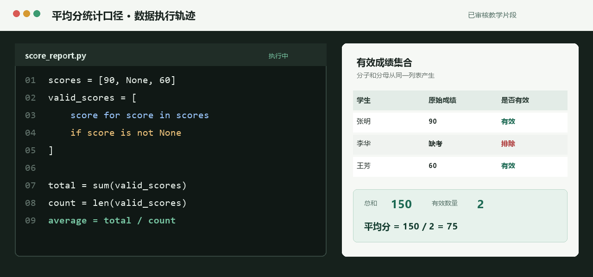

KN_JAVA_ENCAPSULATION
封装与访问控制
能够从同一有效记录集合计算分子和分母。

正在等待带来源的联网教学视频
系统只展示可核验来源，不生成虚构链接
文档教学
本轮未检索到白名单内的官方文档，可继续使用下方图文讲解。
与诊断结果的连接
你已经直接读取了私有成绩数组，但缺考 null 未排除。问题不在计算，而在绕过了封装的访问方式与统计口径。
01
先确定同一个有效数据集合
平均分不是先套公式，而是先确定通过哪个封装方法取得有效成绩。总和与数量必须来自同一个有效成绩集合。
有效成绩
[90, 60]
平均分
(90 + 60) / 2 = 75
02
把两种口径并排看
本次做法
(90 + 60) / 3 = 50
分子排除了缺考，分母却仍包含缺考学生。
一致口径
(90 + 60) / 2 = 75
总和与数量都来自 getter 返回的有效成绩集合。
03
再看一个最小案例
成绩数组为 {80, null, 100, null}，过滤 null 后有效成绩是 {80, 100}，平均分 180 / 2 = 90。